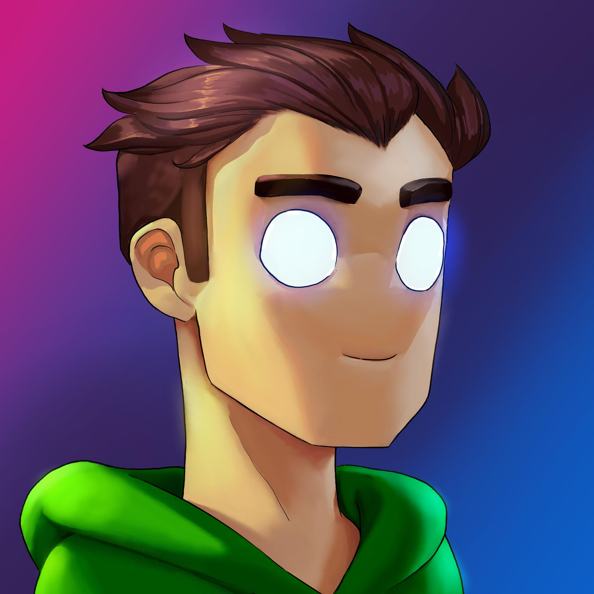
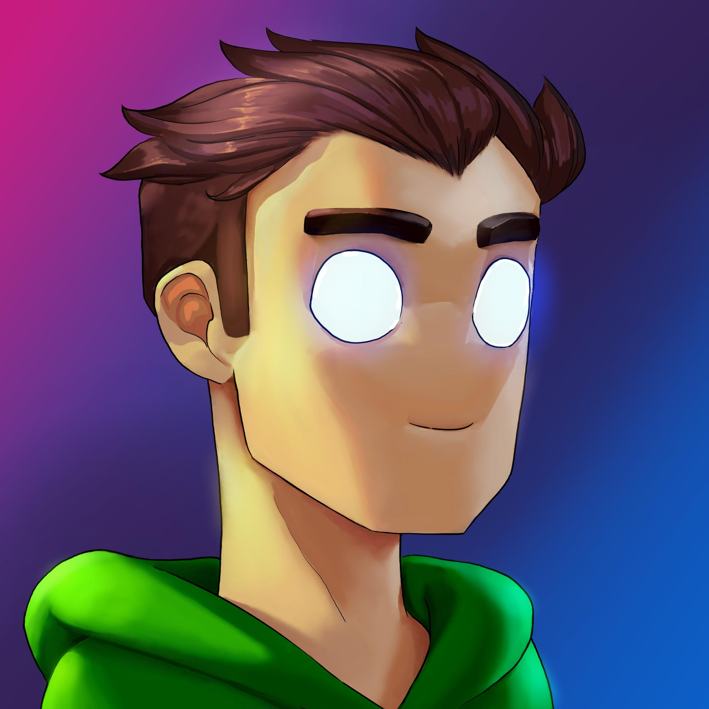
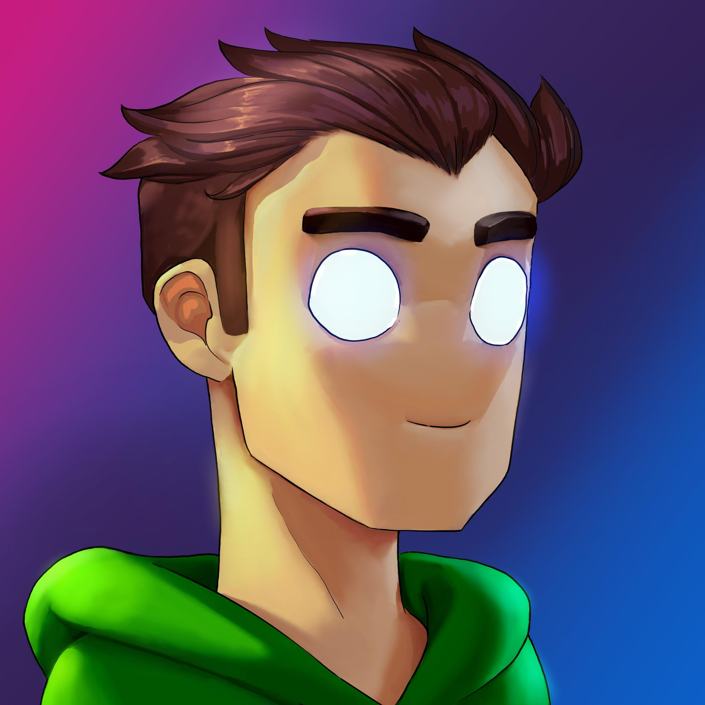
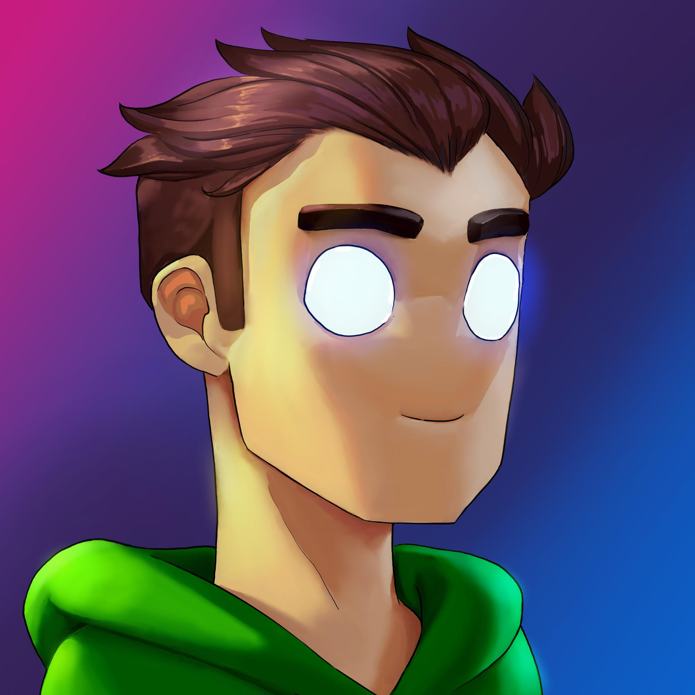

Filip Gale
 

Umjetnik i programer igara strastveno povezujući kreativnost i tehnologiju.
 

Umjetnik i programer igara strastveno povezujući kreativnost i tehnologiju.
Dok težim prema magistarskom stupnju, strastveno usredotočen na usavršavanje zanata razvoja igara. Od dizajniranja uzbudljivih igrara do stvaranja privlačnih okruženja, pokreću me beskrajne mogućnosti stvaranja iskustava koja očaravaju i inspiriraju.
Bez obzira jeste li ovdje radi umjetnosti, tehnologije ili izgradnje svjetova unutar igara, kontaktirajte me.